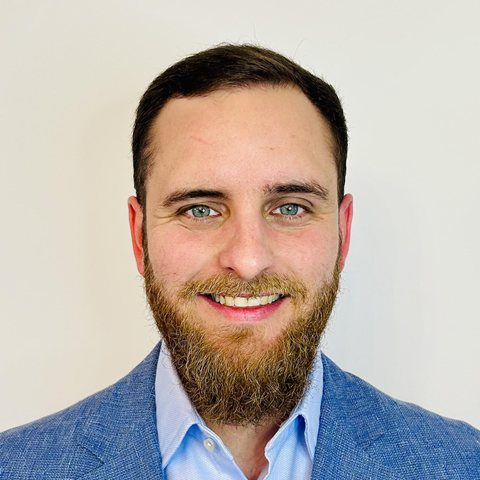

Próximo encuentro
Jueves, desde las 20:00
12NOV
Agua y nuevas generaciones Título de la charla por confirmar

Jesús Mateos Robledo
Presidente de YWP Spain (Young Water Professionals)
Es gratis. Las plazas son limitadas.